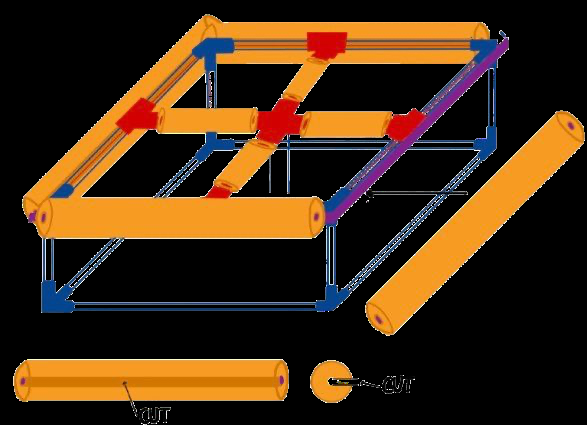

The robot
The frame was a floating box of PVC pipe, with an upper platform and a lower mesh, so the sensing structure stayed under water while the robot stayed afloat. The waterproof electronics box sat in the middle of the top platform, to spread the weight evenly and keep the cables short.
The turbidity sensor pointed down through the platform inside a length of PVC pipe, with its opening facing the direction of travel so fresh water kept flowing past it.
